6.1.1.1. Registro de Orden de Compra Directa¶
Una Orden de Compra en ADempiere, es un tipo de documento emitido por la empresa para realizar pedidos a sus diferentes proveedores. En ella se detalla: la cantidad a comprar, el tipo de producto, precio y condiciones de pago, así como también la forma de entrega.
Para el registro de un documento en ADempiere debe tener en cuenta que existen campos que son de carácter obligatorio, estos campos están identificados con el carácter especial: (*) de color rojo.
Warning
Asegúrese de que cada campo que se encuentre identificado como carácter obligatorio, contenga la información requerida, de lo contrario no podrá completar el registro.
Ubique en el menú de ADempiere la carpeta “Gestión de Compras”, luego seleccione la ventana “Órdenes de Compra”, adjunto imagen para referencia.
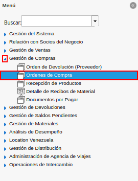
Imagen 1. Menú de ADempiere
Podrá visualizar la ventana “Órdenes de Compra”, con los diferentes registros que contiene dicha ventana.

Imagen 2. Ventana Órdenes de Compra
Seleccione el icono “Registro Nuevo” en la barra de herramientas de ADempiere para crear un nuevo documento.
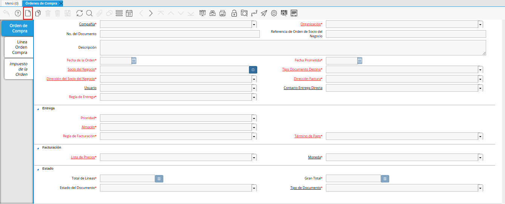
Imagen 3. Registro Nuevo
Seleccione en el campo “Compañía”, el nombre de la compañía de la cual se emite el documento “Orden de Compra”.

Imagen 4. Campo Compañía
Seleccione en el campo “Organización”, el nombre de la organización de la cual se está emitiendo el documento “Orden de Compra”.
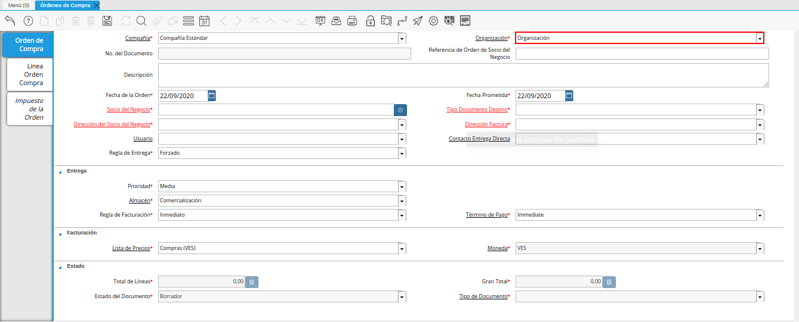
Imagen 5. Campo Organización
Warning
El valor en el campo organización debe ser diferente del símbolo (*) ya que éste símbolo hace referencia a todas las organizaciones.
En el campo “No. de Documento”, no es necesario ingresarlo en forma manual, al momento de realizar un registro, ADempiere genera un número de secuencia automáticamente para el documento, al seleccionar la opción guardar del nuevo registro de orden de compra.
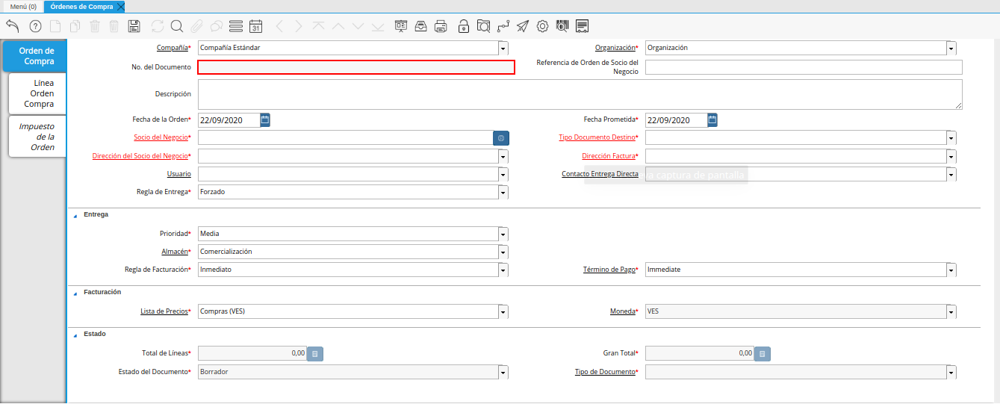
Imagen 6. Campo No. del Documento
Introduzca en el campo “Referencia de Orden de Socio del Negocio”, la referencia de orden del socio del negocio.

Imagen 7. Campo Referencia de Orden de Socio del Negocio
En el campo “Descripción”, introduzca una breve descripción referente a la orden de compra que se está realizando, este campo es opcional.

Imagen 8. Campo Descripción
Seleccione en el campo “Fecha de la Orden”, la fecha de elaboración del documento “Orden de Compra”.
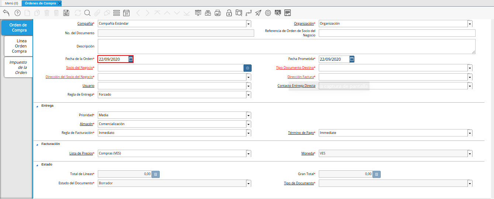
Imagen 9. Campo Fecha de la Orden
Seleccione en el campo “Fecha Prometida”, la fecha de entrega de la orden, prometida por el proveedor.

Imagen 10. Campo Fecha Prometida
En el campo “Socio del Negocio”, debe seleccionar el nombre del socio del negocio (proveedor) al que se le emite el documento “Orden de Compra”.

Imagen 11. Campo Socio del Negocio
Seleccione el tipo de documento a generar, en el campo “Tipo de Documento Destino”, la selección de éste define el comportamiento del documento que se está elaborando, dicho comportamiento se encuentra definido en el documento “Tipo de Documento” elaborado por ERPyA

Imagen 12. Campo Tipo de Documento Destino
Si el socio del negocio, tiene más de una dirección registrada, debe seleccionar la dirección del socio del negocio, caso contrario, si posee dirección única, esta información se refleja automáticamente en el campo “Dirección del Socio del Negocio” una vez haya seleccionado el nombre del socio de negocio.
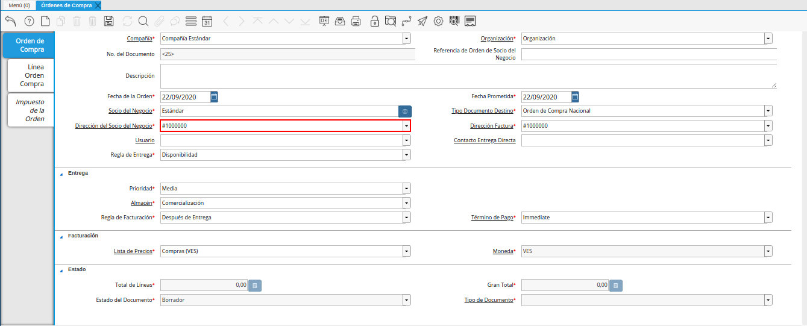
Imagen 13. Campo Dirección del Socio del Negocio
Si el socio de negocio, tiene más de una dirección a facturar registrada, debe seleccionar la dirección a facturar del socio del negocio, caso contrario, si posee dirección única, esta información se refleja automáticamente en el campo “Dirección Factura” una vez haya seleccionado el nombre del socio de negocio.
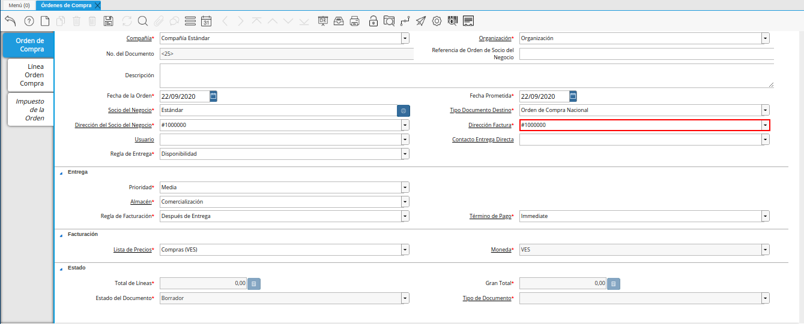
Imagen 14. Campo Dirección Factura
Seleccione en el campo “Usuario”, el usuario del socio del negocio.

Imagen 15. Campo Usuario
Seleccione en el campo “Contacto de Entrega Directa”, el contacto del socio del negocio establecido para la entrega.

Imagen 16. Campo Contacto de Entrega Directa
Seleccione en el campo “Regla de Entrega”, la regla establecida para la entrega de los productos.
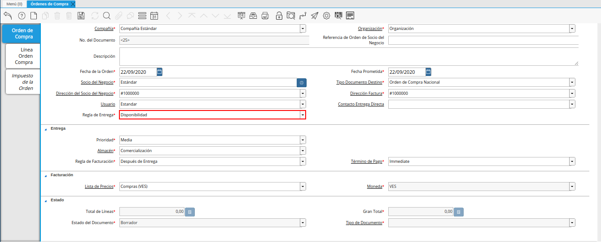
Imagen 17. Campo Regla de Entrega
Seleccione la prioridad de la orden en el campo “Prioridad”, este campo indica la urgencia de los productos o servicios que se están ordenando en el documento, sin embargo, el documento trae predeterminado la opción “Media”.
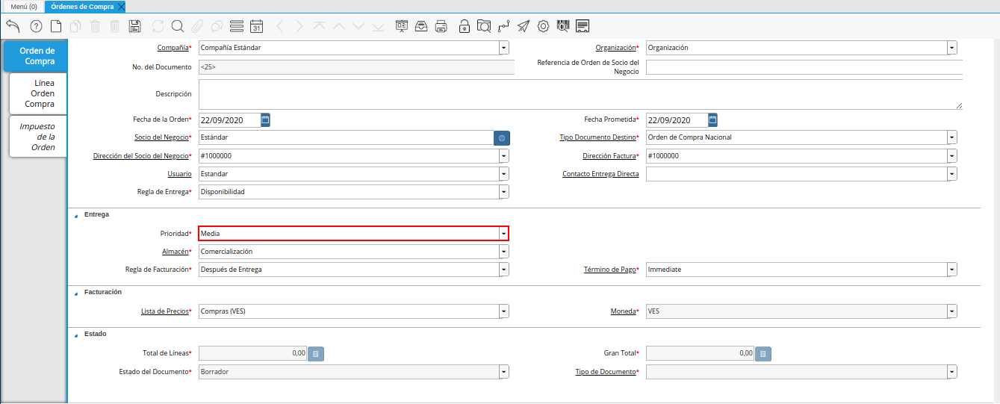
Imagen 18. Campo Prioridad
Seleccione en el campo “Almacén, en el cual se requiere el producto o servicio (Es de Carácter Obligatorio).
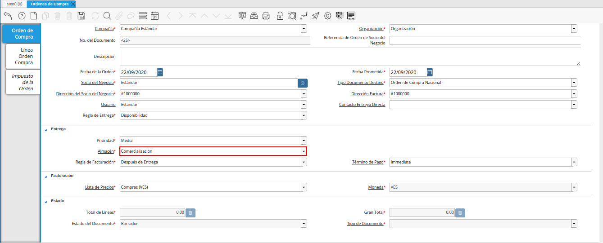
Imagen 19. Campo Almacén
Seleccione en el campo “Regla de Facturación”, la regla establecida para la facturación de los productos.

Imagen 20. Campo Regla de Facturación
Seleccione en el campo “Término de pago”, indica las condiciones, método y tiempo de pago de la compra.

Imagen 21. Campo Término de Pago
Seleccione en el campo “Lista de Precios”, la lista de precios utilizada para la compra.
Esta siempre debe ser “Compras” y determina el precio, margen y costo de los artículos comprados.

Imagen 22. Campo Lista de Precios
La “Moneda”, dependerá del “Tipo de Documento” seleccionado, es decir, si el tipo de documento es: “Orden de Compra Nacional” la moneda será (VES) moneda nacional en curso. Caso contrario, “Orden de Compra Importación” la moneda será, cualquier moneda extranjera que sea utilizada por la compañía para realizar este tipo de compras, ejemplo: (USD, EUR, COP, entre otros).

Imagen 23. Campo Moneda
Warning
Recuerde guardar el registro de la ventana, seleccionando el icono “Guardar Cambios” ubicado en la barra de herramientas, una vez guardado el nuevo registro, podrá avanzar a la pestaña “Línea Orden Compra”.
Seleccione la pestaña “Línea Orden Compra” y proceda a seleccionar el “Producto o Servicio” a ordenar. Si la orden de compra contiene varios productos, el campo “Nro. de Línea”, indicará el orden y despliegue de los mismos dentro del documento. Una vez que guarde el primer producto, deberá seleccionar el icono “Registro Nuevo”, incrementando así el número de líneas por productos en el documento.
Warning
El campo “Orden de Compra”, viene precargado de la pestaña principal “Orden de Compra”.
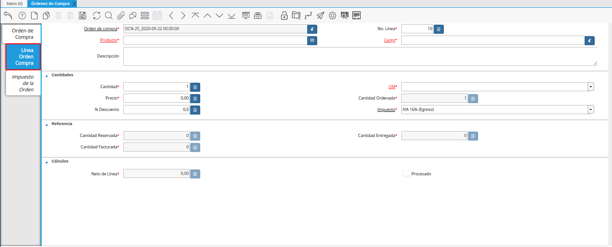
Imagen 24. Línea Orden Compra
Seleccione en el campo “Producto”, el producto por el cual se encuentra realizando la transacción de compra.
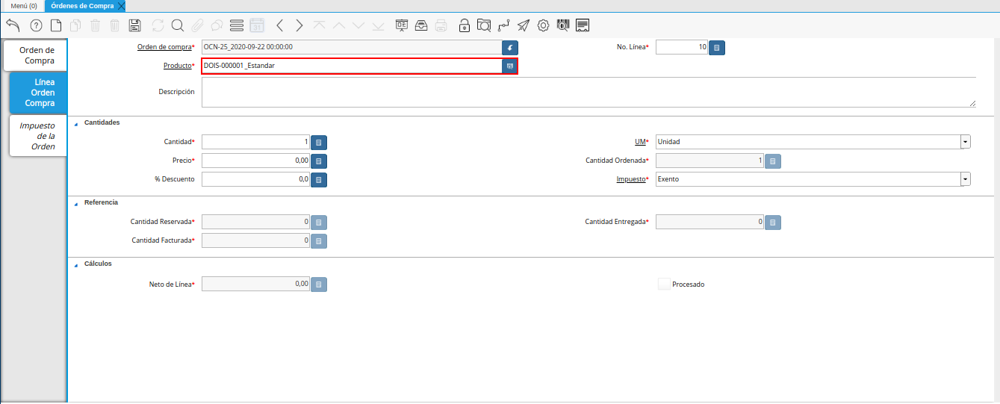
Imagen 25. Campo Producto
Note
Al seleccionar un producto, el campo “Cargo” automáticamente cambia a sólo lectura.
Seleccione en el campo “Cargo”, el cargo por el cual se encuentra realizando la transacción de compra.

Imagen 26. Campo Cargo
Note
Al seleccionar un cargo, el campo “Producto” automáticamente cambia a sólo lectura.
En la sección “Cantidades”, se encuentra el siguiente grupo de campos: cantidad, unidad de medida, precio, cantidad ordenada, % descuento y impuesto.
Seleccione en el campo “Cantidad”, la cantidad a ordenar del producto o servicio seleccionado.
El campo “Cantidad”, indica la cantidad del producto en la compra.

Imagen 27. Campo Cantidad
Seleccione la unidad de medida del producto seleccionado en el campo “UM”, esta puede ser unidad, gramos, kilos, toneladas, entre otras.
El campo “Unidad de Medida, indica la unidad de medida del producto ordenado.

Imagen 28. Campo Unidad de Medida
Introduzca el precio unitario del producto seleccionando en el campo “Precio”, este precio es el establecido por el socio del negocio proveedor.
El campo “Precio”, está basado en la unidad de medida.

Imagen 29. Campo Precio
El campo “Cantidad Ordenada”, indica la cantidad de un producto que fue ordenada.

Imagen 30. Campo Cantidad Ordenada
Introduzca en el campo “% Descuento”, el descuento aplicado a la compra.
El campo “% Descuento”, indica el descuento aplicado o tomado como un porcentaje.
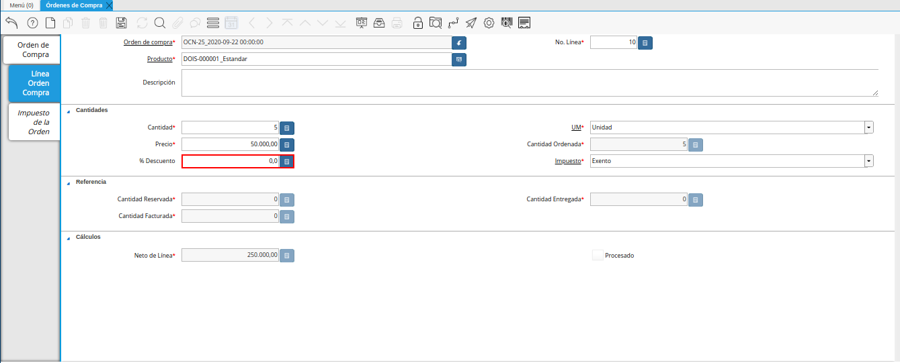
Imagen 31. Campo Descuento
Seleccione el impuesto en el campo “Impuesto”, este puede variar dependiendo del impuesto aplicable al producto seleccionado.
El campo “Impuesto”, indica el tipo de impuesto para esta línea del documento.

Imagen 32. Campo Impuesto
En la sección “Referencia”, se encuentra el siguiente grupo de campos: cantidad reservada, cantidad entregada y cantidad facturada.
Warning
Los campos de la sección referencia, presentaran movimientos sólo sí se se han realizado para la orden de compra, más de una recepción, en relación a la cantidad total de la compra.
El campo “Cantidad Reservada, indica la cantidad del producto que ha sido reservado para otras órdenes.
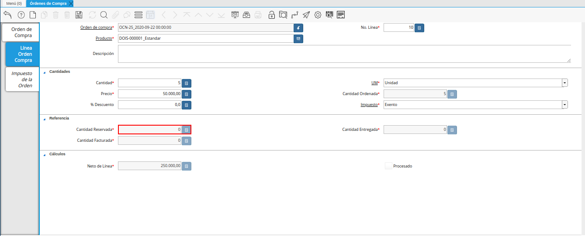
Imagen 33. Campo Cantidad Reservada
El campo “Cantidad Entregada, indica la cantidad de un producto que ha sido entregado.
campo cantidad entregada de la ventana órdenes de compra
Imagen 34. Campo Cantidad Entregada
El campo “Cantidad Facturada, indica la cantidad de un producto que ha sido facturado.
Imagen 35. Campo Cantidad Facturada
En la sección “Totales” se encuentran los siguientes grupos de campos: neto de línea y procesado.
El campo “Neto de Línea, podrá visualizar el total neto de la línea basado en la cantidad y el precio. Cualquier cargo adicional o flete no es incluido.
El campo “Neto de Línea”, indica el total neto de la línea (cantidad * precio) sin fletes ni cargos.
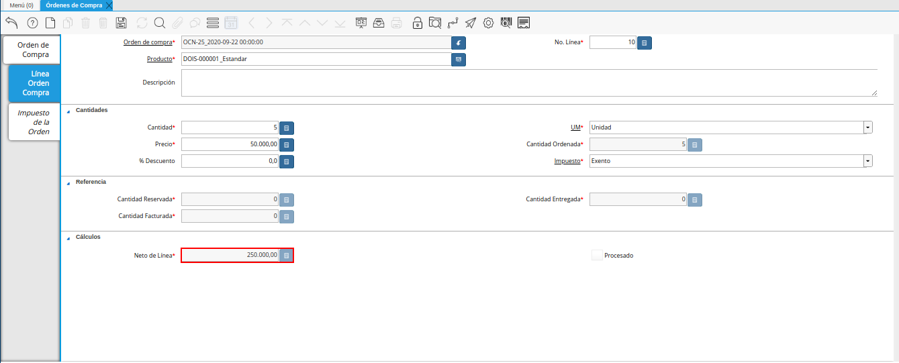
Imagen 36. Campo Neto de Línea
El checklkist “Procesado, indica que un documento ha sido procesado.

Imagen 37. Campo Procesado
Warning
Recuerde guardar el registro de la pestaña “Línea Orden Compra” con el icono “Guardar Cambios” de la barra de herramientas de ADempiere, antes de cambiar a la ventana principal “Orden de Compra”.
Regrese a la pestaña principal “Orden de Compra” para completar el documento que se encuentra realizando.
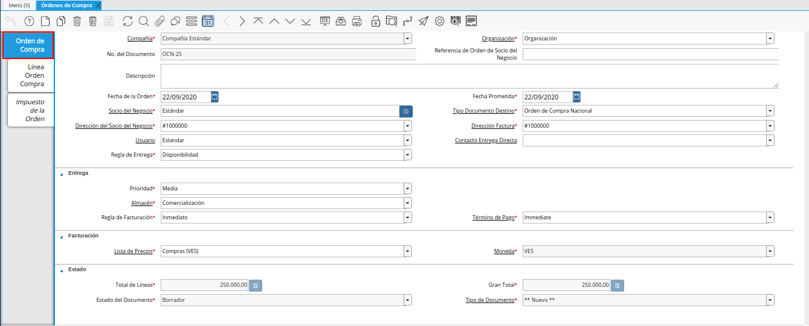
Imagen 38. Pestaña Orden de Compra
Podrá visualizar en el grupo de campos “Estado”, los siguientes campos: total de líneas, gran total, estado del documento y tipo de documento.
El campo “Total de Líneas”, indica el total de todas las líneas en la moneda del documento.
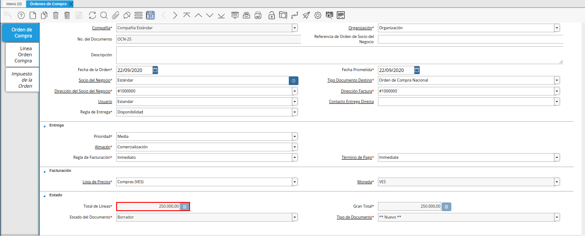
Imagen 39. Campo Total del Líneas
El campo “Gran Total”, indica el total del documento incluyendo impuestos y totales de fletes.
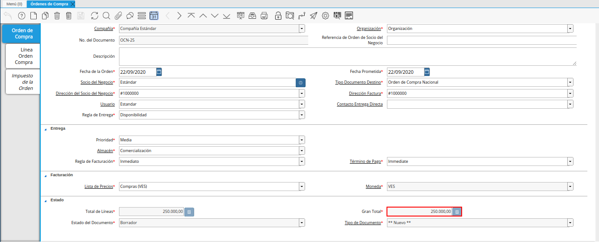
Imagen 40. Campo Gran Total
El campo “Estado del Documento”, indica el estado del documento en este momento, para cambiar el estado del documento utilice la opción “Procesar Orden”, desplegada por el icono “Proceso”, ubicado en la barra de herramientas de ADempiere.
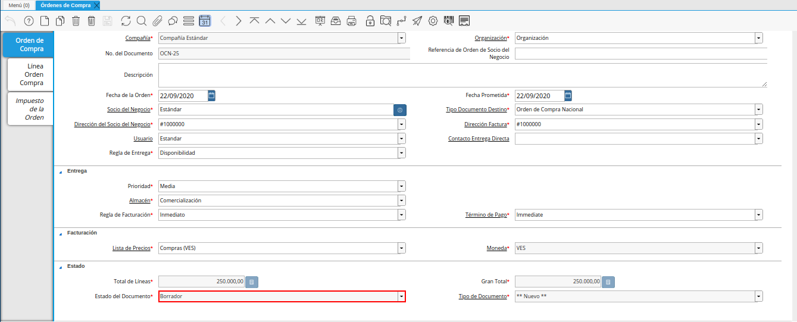
Imagen 41. Campo Estado de Documento
El campo “Tipo de Documento”, indica el tipo de documento que determina la secuencia del documento o las reglas del proceso.
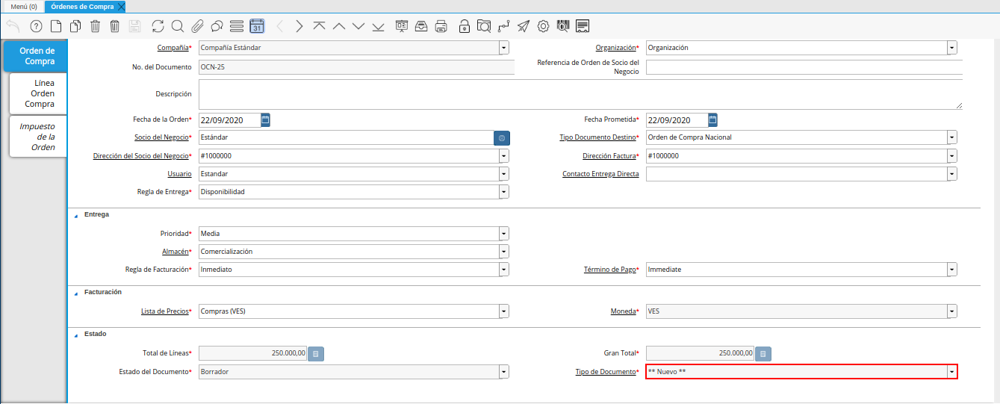
Imagen 42. Campo Tipo de Documento
Seleccione la opción “Procesar Orden”, desplegada por el icono “Proceso”, ubicado en la barra de herramientas de ADempiere.

Imagen 43. Opción Procesar Orden en el Icono Proceso
Seleccione la acción “Completar” y la opción “OK”, para completar el documento “Orden de Compra”.

Imagen 44. Opción Completar